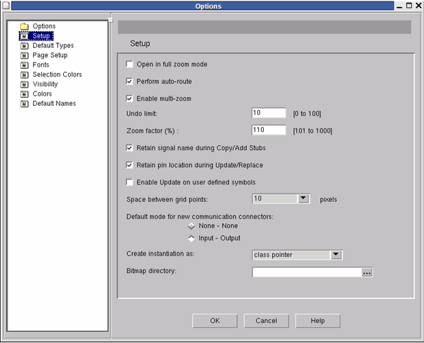

Setup
Figure 9‑17.
Block Diagram Options - Setup Pane

The Setup pane contains the following options:
- Open in full zoom mode — Sets the graphic display of each graphical editor window that you open so that the entire diagram is contained within the window's boundaries.
- Perform auto-route — The active editor window automatically pans when you bring the mouse pointer to an edge of the window. For example, if you bring the pointer to the right-hand edge, the window will scroll to the right.
- Enable multi-zoom — If this check box is selected, when you are in the zoom mode in one of the graphical editors, you remain in the zoom mode and are therefore able to perform another zoom operation. If you deselect this check box, a single zoom is executed when you click on either the Zoom In or Zoom Out icon, just as if you had clicked the mouse pointer within the window. Following this single zoom, the select mode is re-entered.
- Undo limit — Sets the maximum number of undo operations (from 1 to 100) which may be performed in a block diagram, state diagram, or flowchart unit.
Note that for textual units, the buffer size is a constant 1024 on UNIX.
- Zoom factor (%) — Determines by how much the editing window image is increased or decreased in size with each new zoom operation. The Zoom factor that you enter in the dialog box is an integer greater than 100 (representing 100%). If for instance you want to set a zoom factor of 2x, then enter the value 200. When you zoom-in, the image size is doubled in size. With this same factor set, when you zoom-out the image size is halved (in this example to 50%).
- Retain signal names during Copy — Sets whether or not, when a signal is copied within a unit, the source signal name is assigned to the copied signal. Note that this option will not affect how signals are copied between units: the source signal name is automatically retained unless there is already a signal having this name in the second unit. (In this latter case, a new default name will be assigned to the copied signal.)
- Retain pin location during Update/Replace — Sets whether any pin which has been renamed will remain in its original position following updating or replacing of a component.
- Enable Update on user defined symbols — Specifies that user-defined symbols in a block diagram unit be automatically updated following changes to the interface of the instantiated unit. Once you have activated this option, any user-defined symbol for a block diagram unit will be updated automatically when you invoke the Attributes > Component > Update Component or Update Component Tree command.
- Space between grid points — Enables you to change the default grid spacing in the Block Diagram Editor (and also the Symbol Editor) from 10 pixels to one pixel. When grid point spacing is set to one pixel, you can reduce the size of pins and connectors using the Edit > Small Pins command. This enables you to draw signals close to one another.
- Default mode for new communication connectors — Assigns the default mode (direction) for the connectors of new communication channels:
- None-None— Specify to keep the channel unconnected without causing a compilation error.
- Input-Output— The mode depends on whether the channel enters or exits a block.
- Create instantiation as — Set instantiation as either class pointer (using new construct) or as class object.